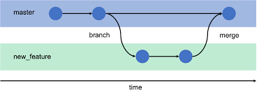

Purpose of a README file
A README file introduces and explains a project. It usually contains the project’s purpose, how to install and use it, and any requirements. It helps others quickly understand and work with your code.
Read MoreA wireframe is a basic sketch of a webpage layout. It shows where elements like headers, text, and images will go, helping plan structure before coding or design.
A README file introduces and explains a project. It usually contains the project’s purpose, how to install and use it, and any requirements. It helps others quickly understand and work with your code.
Read More
A wireframe is a simple outline of a webpage that shows the layout and placement of elements before coding. Its purpose is to plan structure, organise content, and guide design without focusing on colours or details.
Read More
A branch in Git is a separate line of development. It allows you to work on new features, fixes, or experiments without affecting the main project. Once finished, the branch can be merged back into the main codebase.
Read More